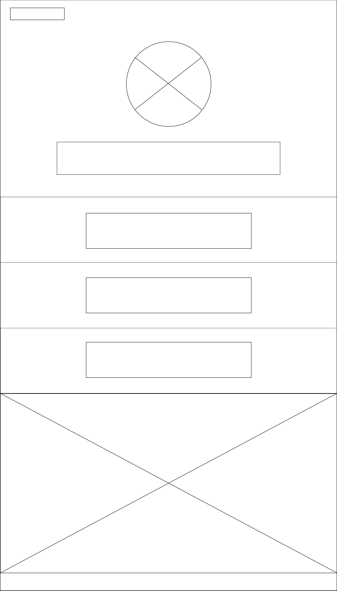
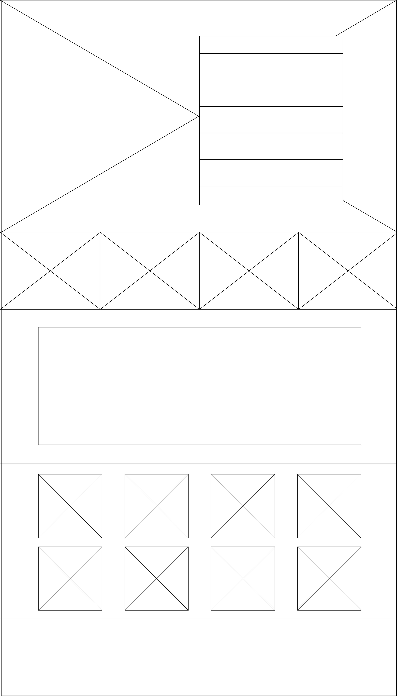

titanloop.com & blackoptical.com
Titan loop shows great use of space with the constrast of it's background images. Balance is achieved through the allignment and symmetry in the type and through repeated symbols within the design. Black Optical uses hierarchy in it's page title through typographic choices, as well as, positioning and placement. What I love the most is that even in the absence of symmetry, there is a clear understanding of "flow" in the middle of the composition where the images of the glasses to the left point the viewer's eye in the direction of the image of the statue.
The two websites are similar in that they are intended to be long, "scroll down" websites with strong uses of allignment and imagery. They differ in that each site use different techniques to draw your attention to their unique content. Titan Loop, for example; uses it's background photos to complement the design of the body copy, where Black Optical uses negative space to embelish the simplicity of their imagery.


The homepage and sponser page of my site attempt to achieve balance by making sure the page division remains consistent throughout the site and the content is in allignment. I use hierarchy by making my focal points larger and more centered on the page.